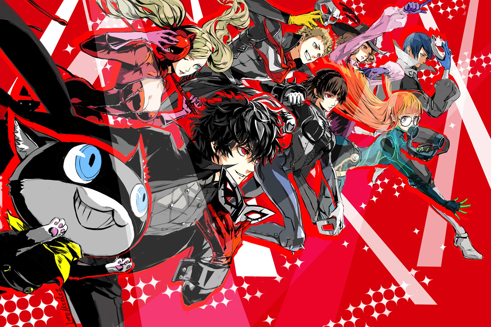

About Joker
Joker is awesome! He is a high school student who takes a stand for what is right by stealing people's hearts.
Joker and his teammates
Joker's Characteristics
- He's a teenager fighting for what is right
- He's the leader of the Phantom Theives of Hearts
- He's an average teenager with a special power
Joker's Teammates
Joker has awesome teammates. I think his best friend is Ryuji. They became friends instantly. Click on the links below to read more about some of Joker's teammates: